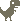

How-To Search Engine Every Request Starts With “How To”
This small joke works on Preact. It allows disabling “How To,” which makes it universal. Your personal search counter is for free!
Here're my experiments with algorithms, colors, images, and computations. Everything is open-source.
↓ 2022
This small joke works on Preact. It allows disabling “How To,” which makes it universal. Your personal search counter is for free!
↓ 2019
↓ 2018

↓ 2017
The experiment allows switching optimization methods for calculations, including GPU-based and web workers.

It's extensible and allows bots switching.
↓ 2016 